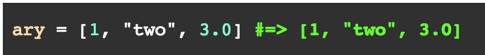
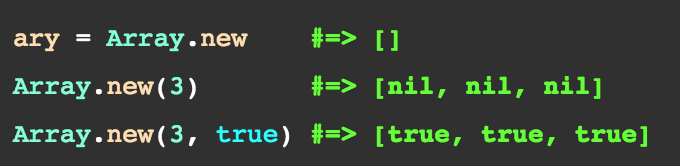
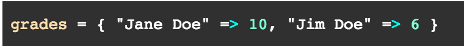
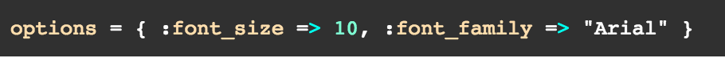
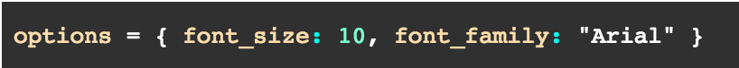
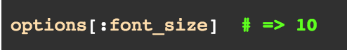

Arrays in Ruby are an ordered set of objects that are indexed by integers starting with 0. When indexing an array using negative integers, the indices begin at the end of the array (ie -1 would index the last item of the array).
We can create an array using a variable and assigning it to object within a set of brackets using the following syntax:

Besides the aforementioned way, another way to make an array is by defining each characteristic of the array. First defining the array name, then telling it how many objects will be within the array, and lastly what those objects are, using the following syntax:

Arrays are a great way to store information that we want to call on using integers as our index. The tricky thing, however, is to remember that the first object in an array is always considered the zeroeth element, called on from the 0 position. For example:
array = ["cat", 'dog", "monkey", "elephant"]
to call on the "cat" string I can use
array [0] #=> "cat"
and using other integer indices I can call on other objects in the array
array [1] #=>"dog"
array [2] #=> "monkey"
array [3] #=> "elephant"
But what if we didn't want to use integers as our index? What if we wanted to assign each position in the array to a specific key...
Hashes are very similar to arrays, but instead of using integers as our index, we are able to assign specific keys to each value. We are able to use several methods to create hashes.
We can use brackets to create a hash using its, implicit form:

Another way to create hashes is:

And yet ANOTHER way to create hashes is:

We can then call on different values from each key using

Ultimately, we can think of hashes as a more refined version of arrays where we can be more specific with the keys which we use to call the values.